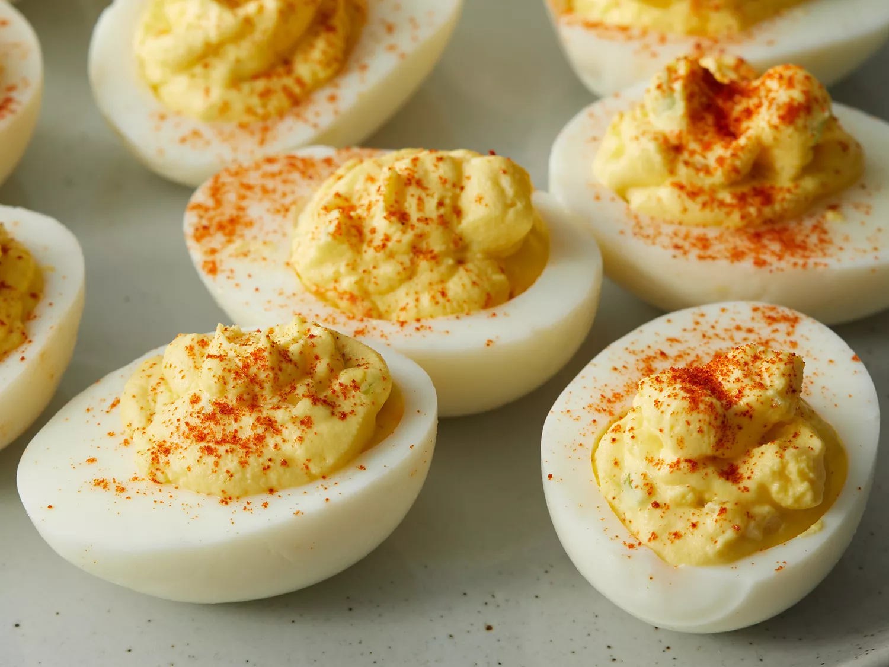

Simple Deviled Eggs

Description
These deviled eggs are delicious for Easter brunch and are always popular at our holiday parties.
Ingredients:
- Eggs
- Mayonaise
- Sugar
- Mustard
- Vegetables
- Seasonings
Steps:
- Boil eggs to hard cooked (takes about 50 minutes cooking time).
- Cut the boiled eggs in half and remove the yolks.
- Mash the yolks with a fork and add the remaining ingredients.
- Stuff or pipe the filling into the egg white halves.